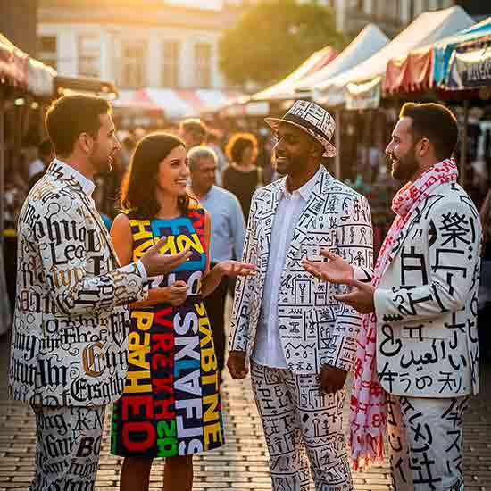

Identidad y cultura social: una charla entre signos
Lo que hablamos también nos habla
“Los límites de mi lenguaje son los límites de mi mundo.”
— Ludwig Wittgenstein
A veces me gusta imaginar que las palabras que usamos no son solo herramientas para comunicarnos, sino pequeños ladrillos con los que vamos construyendo la realidad que habitamos.
Cuando vi esta imagen —con esos trajes cubiertos de signos, alfabetos y grafías tan distintos entre sí— no pude evitar pensar en lo hermoso (y conflictivo) que es el lenguaje. Cómo lo usamos para encontrarnos… pero también para diferenciarnos. Cómo puede ser un puente entre culturas, o una barrera.
En esta entrada, te invito a recorrer cinco ideas que me vienen rondando hace tiempo sobre el lenguaje. No como teoría dura, sino como una charla de café, una invitación a mirar de cerca algo que usamos todos los días y, sin embargo, muchas veces ignoramos en su profundidad.
1. Nombrar es crear
No decimos las cosas como son: las decimos como podemos nombrarlas. Y eso cambia todo. El lenguaje no solo representa el mundo: lo interpreta, lo organiza, lo filtra. En América Latina, muchas veces arrastramos palabras impuestas —coloniales, eurocéntricas— que deformaron nuestras realidades originales. Por eso, recuperar los términos propios, las lenguas nativas, no es solo un acto cultural: es un acto político.

2. Hablar desde la raíz
Las historias de nuestros abuelos, los cuentos que se repiten en las sobremesas, los refranes, las canciones de cuna… todo eso viaja en palabras. El lenguaje es la vía por donde circulan nuestras memorias. Por eso, cuando una lengua muere, no solo desaparecen palabras: se apaga una forma única de ver el mundo.
3. Hablar como los nuestros
¿Alguna vez te sentiste fuera de lugar solo por cómo hablabas? ¿O por cómo no hablabas? En Argentina y en muchos países latinoamericanos, el modo de hablar define la pertenencia: el “che”, el “vos”, los acentos, las jergas de barrio. Todo eso crea una sensación de hogar… pero también puede marcar quién queda fuera. El lenguaje puede abrazar o excluir. Ser código de encuentro o de distancia.
4. Las palabras que inventan futuros
En la literatura —y especialmente en la ciencia ficción o la fantasía— vemos cómo los mundos imaginarios vienen con sus propios lenguajes. ¿Será porque toda utopía (o distopía) necesita nuevas palabras para existir? En nuestra región, inventar lenguajes propios también puede ser una forma de sanar lo roto, de escribir lo que fue silenciado.
5. ¿Pensamos distinto si hablamos distinto?
La idea de que el idioma que hablamos moldea nuestra percepción del mundo no es nueva. Wittgenstein lo dijo, y también Sapir y Whorf. ¿Cómo sería pensar en un idioma donde no existe el “yo”? ¿O donde no hay tiempo verbal futuro? En ciertas lenguas indígenas, por ejemplo, la relación con la naturaleza es tan distinta que lo que para nosotros es “propiedad”, para ellos es “coexistencia”.
Te invito a conversar
Si te resonaron estas ideas, te dejo algunas preguntas para que sigamos la charla en los comentarios o redes:
¿Creés que el lenguaje cambia el mundo, o solo lo refleja?
¿Qué palabras sentís que te definen como parte de tu comunidad?
-
¿Has leído historias donde un idioma inventado cambie toda la lógica del mundo narrado?
Este blog busca abrir diálogos sobre lenguaje, literatura y ética en clave de ciencia ficción, fantasía y pensamiento crítico. Desde Argentina, con mirada latinoamericana.